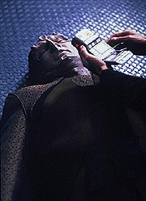
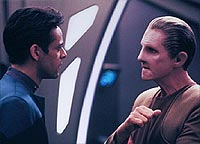
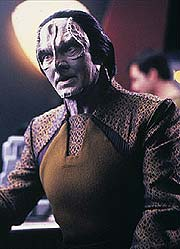
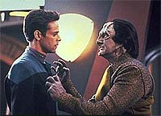
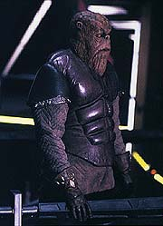

|

|
|
MANCHETE
DO EPISDIO
Mistrios
de Garak constituem um dos
mais ricos personagens da srie
Episdio
anterior | Prximo
episdio
Sinopse:
Data Estelar:
desconhecida.
Garak se sente muito mal em um dos
encontros semanais para almoar com Bashir, mas ele recusa a
ajuda mdica do doutor e adia o encontro sem mesmo querer admitir
que est sofrendo. Bashir fica intrigado, ainda mais quando
observa, distncia, Garak conversando com Quark, uma conversa
em que o Cardassiano encomenda um pea de equipamento ao Ferengi.
Quando Bashir pergunta a Quark sobre a natureza do encontro, o
Ferengi sai pela tangente.
 Algum
tempo depois, Quark chama Bashir ao seu bar, para dar conta de um
Garak bbado e claramente com muita dor. Garak recusa novamente o
tratamento de Bashir, mas agora no h remdio pois o
Cardassiano tem um colapso e cai ao solo. Ao examinar o
Cardassiano, Bashir descobre um misterioso dipositivo implantado
em seu crebro. Com a ajuda de Odo, nosso bom doutor descobre que
Quark tentou obter o item encomendado por Garak com outro
Cardassiano de nome Boheeka. Infelizmente a pea de biotecnologia
procurada era confidencial, levando o contato de Quark ao
desespero por ser um material feito secretamente pela temida Ordem
Obsidiana Cardassiana, o servio secreto de Cardssia.
Bashir vai at os aposentos de Garak, onde encontra o Cardassiano
tomando doses cavalares de sedativos. Quando Bashir informa que
Quark no poder trazer a sua encomenda, o Cardassiano acaba
admitindo que o implante um dispositivo anti-tortura, projetado
para estimular os centros de prazer do seu crebro, para que ele
pudesse resistir a qualquer interrogatrio. Entretanto, ele
perverteu a utilizao do implante, deixando-o ligado direto
durantes os dois ltimos anos, para que ele pudesse suportar a
dor que representa o seu exlio em Deep Space Nine. Agora o
implante est falhando, e ele est morrendo.
 Garak
diz que Bashir no pensaria em ajud-lo se soubesse a verdade
sobre o seu passado. Ele revela que foi um Gul no tempo da ocupao
e que tinha um ajudante de nome "Elim", ento. Garak
diz que para impedir a fuga de alguns prisioneiros Bajorianos ele
ordenou a destruio de uma nave cheia de Cardassianos civis
inocentes e do prprio Elim. Um dos passageiros Cardassianos era
filho de um militar muito importante, que exilou Garak. Bashir diz
que no se importa com o passado do Cardassiano e consegue
convencer Garak a desligar o implante.
Mais tarde, Garak, com um severo ataque de abstinncia, comea a
destruir os seus aposentos e agredir verbalmente a todos,
incluindo Bashir e a ele prprio. Ele oferece uma nova verso
para a sua histria, uma em que ela era um protegido de Enabran
Tain na Ordem Obsidiana e "Elim" era tambm um agente.
Uma vez, quando os dois interrogavam um bando de crianas
Bajorianas sujas e fedidas, Garak ficou saturado pelo absurdo da
situao, deu o dinheiro que tinha nos bolsos a elas e as mandou
embora, o que levou ao seu exlio. Aps o ataque, Garak desmaia
de novo. Algum tempo depois, Bashir descobre que o mero fato de
desligar o implante no foi suficiente para parar a deteriorao
das clulas de Garak --sua prpria fisiologia se tornou
dependente do aparelho.
Quando Bashir sugere uma reativao temporria do implante,
para que ele tivesse mais tempo para procurar uma cura defintiva,
Garak diz que prefere morrer a ter seu implante reativado.
Aparentemente acreditando estar s portas da morte, Garak conta
ainda outra verso de sua histria, uma em que "Elim"
era o seu mais querido amigo, quando do surgimento de um tremendo
escndalo na Ordem. Garak armou tudo para que "Elim"
ficasse com a culpa em seu lugar, para ao final descobrir que
"Elim" tinha feito o mesmo com ele, s que antes --isso
teria levado Garak ao exlio.
Bashir, determinado a salvar Garak, vai ao encontro do aposentado
Enabran Tain no santurio do ex-mentor de Garak, em territrio
Cardassiano. Tain mostra imediatamente saber tudo sobre Bashir e a
condio terminal de Garak e concorda em fornecer informao
crucial para o tratamento do seu ex-protegido, esperando que ele
possa viver uma longa e terrvel vida no exlio. Perguntado
sobre "Elim", Tain diz que Garak nada mudou e diz a
Bashir que "Elim" o primeiro nome de Garak. Tain pede
que Bashir diga a Garak que ele sente muita falta do antigo
pupilo.
Dez dias depois, Bashir e um convalescente Garak se reunem para
mais uma refeio. Bashir se diz intrigado por todas as histrias
contadas pelo alfaiate e pergunta a Garak quais so verdadeiras e
quais so falsas, ao que o Cardassiano retruca, dizendo que todas
so verdadeiras --ESPECIALMENTE as mentiras.
Comentrios:
Por obra destes "maravilhosos, misteriosos e complexos
Cardassianos", chega um dos melhores momentos desta temporada
e de toda a srie, catapultando Garak ao estrelato da srie e de
todo o cnone de Jornada. Saiba mais detalhes nas linhas
abaixo, felizmente sem a necessidade de ter um implante em seu crebro
para perfeita compreenso.
 Talvez
o maior mrito do roteiro do episdio tenha sido o de no cair
na fcil rota (especialmente em se tratando de Jornada Nas
Estrelas) da pregao anti-drogas. E olha que um
"implante-produtor-de-prazer" constitui um prato cheio
para mais uma infame e horrorosa "mensagem da semana".
Aqui o "implante" apenas um conveniente (e robusto)
elemento que nos permite entrar na mente de Garak.
A trama do episdio minimalista e sem furos. Uma boa escolha
foi adiantar qualquer mistrio sobre o implante e chegar o mais rpido
possvel ao cerne da questo: Garak. Uma premissa simples,
respostas de todos os personagens dentro de suas respectivas
caracterizaes premissa e, principalmente, um desfecho no-manipulativo
consistente com tal premissa. Grande drama, sem dvida alguma.
Bravo!
Kira e Sisko no tiveram praticamente nada pra fazer no episdio.
O comandante, entretanto, teve uma bela fala sobre "falar
alto" com almirantes. Em vista dos eventos em "The
Maquis", isso faz um bocado de sentido. Interessante
tambm uma cena com O'Brien, em que formalmente
estabelecido pelo Engenheiro que os Cardassianos sabotaram os
computadores da estao antes de a deixarem para trs. Temos
tambm uma boa cena entre Bashir e Dax logo no comeo do
primeiro ato, em que a Trill tenta oferecer alguma perspectiva a
Julian sobre o relacionamento dele com Garak, apresentando de
passagem uma referncia a Keiko O'Brien, permitindo que Bashir
dispare um autntico "McCoyismo" ("Eu sou um mdico,
no um botnico").
Brilhante a cena entre Quark e Garak e como o Ferengi desconversa
quando Bashir tenta obter informaes sobre tal encontro. A
conversa entre Boheeka e Quark ilustra novamente a melhor
caracterizao do "Barman" e sugere de forma clara
como foram as transaes de Quark com os Cardassianos no tempo
da ocupao Bajoriana.
O lado mais sombrio de Odo emerge com fora total no episdio,
em sua admirao pela eficincia da Ordem Obsidiana, em sua
maneira de justificar a sua espionagem a Quark e na forma como ele
insiste em interrogar Garak, mesmo podendo pr em risco a vida do
Cardassiano. Todas essas so atitudes nunca vistas em nenhum
personagem regular de nenhuma srie de Jornada nas Estrelas
at ento.
Este episdio sem dvida o ponto alto de Bashir at ento
na srie, elevando o relacionamento dele com Garak alguns furos
acima do que j havia sido estabelecido em "Cardassians",
no comeo da segunda temporada. simplesmente fantstico ver
as iluses de Bashir se estilhaando medida que Garak vai
exibindo as suas diferentes verses para a histria do seu
passado. Tais experincias sero muito importantes para Bashir
encontrar sua maturidade ao longo da srie: ele vai perder sua
inocncia e ingenuidade, mas no sua tica e decncia.

particularmente digno de nota o fato de Bashir encarar de frente
Odo quando o Comissrio insiste em interrogar Garak a todo custo,
sem pedir nenhuma espcie de apoio a Sisko (isso extremamente
importante, especialmente se levarmos em considerao o quanto
Odo apresentado de forma sombria no episdio). Ainda mais notvel
foi o fato de ele ir visitar o "leo em sua toca"
(digo, Tain em seu santurio) e trazer de volta o "prmio"
procurado. Tal pequena viagem poderia realmente ter acabado muito
mal para o bom doutor.
A idia do implante foi extremamente original e consistente,
oferecendo uma explicao de como Garak pode oferecer um
exterior to tranqilo e confortvel, mesmo em um ambiente to
inspito para um Cardassiano, como uma estao cheia de
Bajorianos. sempre divertido tentar "traduzir" as
histrias de Garak --e o mais incrvel que diferentes pessoas
podem chegar a diferentes interpretaes de tais histrias--,
mas acredito que o objetivo (alcanado, sem nenhuma dvida) aqui
oferecer uma espcie de "impresso" da
personalidade de Garak ao espectador, onde no de fato
importante identificar o que seja mentira ou verdade.
De todas as muitas histrias contadas por Garak, ns podemos
extrair as seguintes verdades irrefutveis: ele nunca fez parte
do Comando Central, nunca foi um militar, foi um dia um alto
agente da Ordem Obsidiana, um protegido do prprio Enabran Tain
(com quem ele tem um relacionamento extremamente especial) e, por
razes e circunstncias desconhecidas (que alis no ficam
claras em nenhum ponto da srie --para benefcio do prprio
personagem), ele foi exilado (com alguma participao crucial de
Tain) em Deep Space Nine, na poca da retirada das foras
Cardassianas do setor Bajoriano.
A concepo da Ordem Obsidiana foi simplesmente genial, e faz-la,
desde sua introduo, um anlogo e superior Tal-Shiar
Romulana (introduzida no excelente episdio da sexta temporada da
Nova Gerao "Face Of the Enemy") foi mais do
que adequado. A forma como Boheeka (teoricamente um militar
bastante experiente) entrou em pnico quando a "Ordem"
mostrou estar envolvida em sua pequena transao com Quark foi
uma maneira perfeita de apresentar o poder da organizao. Por
trs de todo este poder temos a figura de (um aposentado) Enabran
Tain, que no desaponta nesse sentido ao dar uma casual amostra
de tal poder, ao demonstrar saber detalhes mesmo sobre as preferncias
pessoais de Bashir, do relacionamento do doutor com Garak e mesmo
sobre a condio terminal do alfaiate. Ao afirmar que quer que
Garak viva uma longa vida de sofrimento no exlio e ao mesmo
tempo que sente falta do seu antigo discpulo nos apresenta mais
uma amostra da complexidade da caracterizao Cardassiana em
geral e do relacionamento entre Garak e Tain em particular. Esse
relacionamento movimentar ainda mais trs episdios clssicos
no curso da srie.
 A
direo de Friedman absolutamente brilhante, em um episdio
bastante difcil por conter, em sua maior parte, cenas envolvendo
simplesmente dilogos entre duas pessoas. A diretora utilizou
tomadas com cmera na mo, de forma a dar mais dinmica a tais
cenas. A cena dos aposentos de Garak, que acaba por ser o ponto
alto do episdio, foi to bem dirigida quanto as mais bem
dirigidas cenas de drama televisivo americando dos ltimos
tempos. Uma verdadeira obra-prima desde o seu incio, com uma
bela montagem mostrando a dedicao de Bashir a recuperao de
Garak, at um festival de cmera na mo: colada no rosto no
atores, com grandes ngulos --especialmente quando Garak comea
a quebrar a moblia, seguindo os atores, rodando a volta dos
atores etc.
Todos os regulares foram realmente perfeitos no que foi pedido
pelo episdio. O jogo de cintura de Shimerman e a implacabilidade
de Auberjonois foram grandes destaques. Mas, acima de todos, El
Fadil, em seu melhor momento na srie at ento, projetando
claramente um interior ainda ingnuo e inexperiente, superimposto
a um extremo senso de dever e competncia, uma coisa nada fcil
de se apresentar, especialmente de forma to cristalina.
Robinson teve outra atuao fenmenal. De fato, no exagero
considerar a cena nos aposentos de Garak, que acaba levando ao
colapso do personagem, como a melhor amostra de interpretao
(entre tantas atuaes memorveis) em toda a srie. Dooley
parece que nasceu para viver Tain: o nvel de ameaa que ele
consegue projetar sem nenhum atributo fsico especfico
impressionante. Skaggs foi uma grande surpresa como Boheeka e
Gillespie fez o pedido como Jabara.
Ainda que simplesmente uma linha jogada na poca, a guerra futura
entre Klingons e Cardassianos contida no livro "Meditation on
a Crimson Shadow" (um belo ttulo, por sinal) indicado por
Garak a Bashir ao final do episdio, de fato iria ocorrer no
curso da srie. O mais interessante que a guerra entre a
Federao (Klingons e, mais tarde, os proprios Romulanos) e o
Dominion (Cardassianos e, mais tarde, os Breen), que dominaria
tematicamente a srie em suas duas ltimas temporadas, tem, de
certa forma, as suas origens neste conflito. O final da guerra
Dominion, em que Garak foi pea fundamental em sua resoluo,
sela o trgico destino do Cardassiano definitivamente, evocando
um clima de "Meditao sobre uma sombra escarlate", o
pensamento sobre o ocaso de toda uma civilizao e a eterna
esperana e lembrana para que algo assim nunca se repita.
Existe um certo problema com o final, no sentido de que ele sugere
que a verso de Garak "sem o implante e livre da fase de
abstinncia" exatamente igual a verso de Garak
"com implante funcional e submerso em um oceano de
endorfinas". Isso tambm sugerido nos episdios
seguintes envolvendo o Cardassiano, em que possveis diferenas
entre "estas suas duas verses" no so claramente
exploradas. Como usual, debita-se este problema na conta da srie
como um todo, mas vale ressaltar que o nvel de provaes pelas
quais Garak passa ao longo da srie mais de uma vez o coloca a
beira de um colapso completo. Quando o momento oportuno chegar,
prometo retornar a este ponto do Garak com/sem implante.
"The Wire" um estupendo drama que examina de
forma muito prxima e com propriedade a mente do personagem mais
complexo da srie, Garak; empresta a Bashir admirveis caractersticas
de compaixo e determinao, trazendo o personagem
definitivamente vida e, por outro lado, tambm iniciando-o em
um caminho de "perda da inocncia"; e planta preciosas
sementes que, juntamente com outros elementos introduzidos at l,
servem como base para o legendrio episdio duplo da terceira
temporada, "Improbable Cause"/"The Die Is
Cast".
Citaes
Bashir - "In my expert
medical opinion, I'd say it's... sick."
("Em minha opinio de especialista mdico, eu diria que ele
est... doente.")
Bashir - "There's always Quark's."
("Sempre tem o Quark's.")
Garak - "True, but I'm really not in the mood for noisy,
crowded and vulgar today."
("Verdade, mas no estou no clima para o barulhento, lotado
e vulgar hoje.")
Sisko - "I wasn't yelling. I was just expressing my
opinion, LOUDLY."
("Eu no estava gritando. Estava apenas expressando minha
opinio, ALTO.")
Bashir - "I hope you don't have one of those little bugs
hidden in my quarters."
("Espero que voc no tenha um daqueles pequenos grampos
escondidos nos meus aposentos.")
Odo - "Should I?"
("Eu deveria?")
Garak - "Doctor, did anyone ever tell you that you are an
infuriating pest?!"
("Doutor, algum j disse que voc uma peste de
enfurecer?!")
Bashir - "Chief O'Brien, ALL the time, and I don't pay any
attention to HIM either."
("O chefe O'Brien, TODO o tempo, e eu no presto ateno
NELE tambm.")
Garak - "My dear doctor, they're all true."
("Meu caro doutor, elas so todas verdade.")
Bashir - "Even the lies?"
("Mesmo as mentiras?")
Garak - "Especially the lies."
("Especialmente as mentiras.")
Trivia:
 Estria de Paul Dooley como Enabran
Tain, que retornaria mais tarde em mais 3 episdios no decorrer
da srie, todos clssicos. Na terceira temporada no legendrio
episdio duplo "Improbable Cause"/"The
Die Is Cast" e na quinta temporada no no menos
sensacional "In Purgatory's Shadow".
Estria de Paul Dooley como Enabran
Tain, que retornaria mais tarde em mais 3 episdios no decorrer
da srie, todos clssicos. Na terceira temporada no legendrio
episdio duplo "Improbable Cause"/"The
Die Is Cast" e na quinta temporada no no menos
sensacional "In Purgatory's Shadow".
Paul Dooley, nascido Paul Brown em 22
de fevereiro de 1928 em Parkersburg, West Virginia, EUA, j
participou de filmes como "Madison" (2000),
"Runaway Bride" (1999), "Little Shop of
Horrors" (1986), "Popeye" (1980) e vrios outros
filmes do diretor Robert Altman, como "A Wedding" (1978)
e "A Perfect Couple" (1979). Mas talvez seja mais
lembrado no cinema em papis de pais amorosos e deseperados como
em "Breaking Away" (1979, como pai do personagem de
Dennis Christopher) e "Sixteen Candles" (1983, como pai
da personagem de Molly Ringwald). Paul tambm um bom
cartunista, mgico, palhao e cmico de auditrio. Dooley j
trabalhou em sries de TV como "Get Smart", "L.A.
Law", "Dream On", "E.R.", "Ally
McBeal", "Dharma & Greg",
"Millennium", "Chicago Hope" e "The
Practice", no papel do juz Philip Swackheim, que lhe valeu
uma indicao ao prmio Emmy na temporada 1999/2000.
Presena de Garak, interpretado
pelo ator Andrew J. Robinson (ou Andrew Robinson, ou Andy
Robinson). Andrew Jordt Robinson, nascido em 14 de fevereiro de
1942 em Nova York, Nova York, EUA. Andy j trabalhou em filmes
como "Dirty Harry" (1971), no papel de Scorpio, que
acabaria por marcar para sempre a sua carreira,
"Liberace" (1988-TV), no papel ttulo,
"Hellraiser" (1987), como Larry, "Cobra"
(1986), como o detetive Monte. Tambm atuou em sries como
"Bonanza", "Kung Fu", "The Twilight
Zone", "Moonlighting", "L.A. Law",
"Law & Order", "The X-Files",
"JAG" etc. J dirigiu, para TV, episdios das sries
"Gilmore Girls", "Judging Amy", Deep Space
Nine (episdio "Looking for Par'Mach in All the Wrong
Places", da quinta temporada) e Voyager (episdio
"Blood Fever", da terceira temporada). Ele
recebeu uma indicao ao prmio Emmy (o Oscar da TV) por sua
participao na srie "Ryan's Hope" (1975-1977) e prmios
recentes do "Los Angeles Drama Critics Circle" por suas
produes teatrais. Andy foi finalista para o papel de Odo,
perdendo para Rene Auberjonois. Sua filha Rachel Robinson
participou, como Melanie, do clssico episdio da quarta
temporada de DS9, "The Visitor". Rachel
tambm foi finalista para o papel de Ezri Dax, que acabou ficando
com Nicole de Boer. Andy ser lembrado eternamente pelos fs de DS9
como tendo trazido vida, em seu Garak, o mais complexo
personagem da histria de Jornada nas Estrelas, em episdios
como "Past
Prologue", "Cardassians",
"Profit
and Loss", "The Wire", "The
Search, Part II", "Second Skin", "Civil
Defense", "Distant Voices", "Improbable
Cause", "The Die is Cast", "The
Way of the Warrior", "Our Man Bashir", "For
the Cause", "Body Parts", "Broken
Link", "Things Past", "In
Purgatory's Shadow", "By Inferno's Light",
"Empok Nor", "Call to Arms", "A
Time to Stand", "Rocks and Shoals", "Favor
the Bold", "Sacrifice of Angels", "In
the Pale Moonlight", "Tears of the Prophets",
"Afterimage", "Inter Arma Enim Silent
Leges", "When It Rains...", "Tacking
Into the Wind", "Extreme Measures", "The
Dogs of War" e "What You Leave Behind".
Tambm participou dos seguintes episdios, como a verso
alternativa de Garak do "universo do Espelho": "Crossover",
"Through the Looking Glass", "Shattered
Mirror" e "The Emperor's New Cloak".
Neste episdio estabelecido que o
nome completo de Bashir Julian Subatoi Bashir.
Siddig El Fadil (doutor Bashir) adorou
o estilo do episdio que ele chamou de "Drama da velha
escola" o que "sempre divertido" segundo o ator.
Ira Steven Behr tambm um grande advogado do episdio, que
ela classificou com um real exemplo de drama. Ele "sobre o
corao humano em conflito com si prprio", disse o
produtor-executivo entusiasticamente.
O episdio foi concebido por Wolfe
para "poupar dinheiro" e acabou se tornando um dos
melhores da temporada e da srie como um todo, segundo a equipe
de produtores e roteiristas.
O rascunho original de Wolfe era
baseado mais diretamente no trato do problema de dependncia de
drogas. Kira ento, que teria um vcio desde os tempos da
resistncia, mas era um roteiro muito difcil, especialmente difcil
era vislumbrar o que viria a partir disto para a Major no
decorrrer da srie, dai a idia original foi abandonada e
redirecionada para Garak
Kim Friedman foi a primeira mulher a
dirigir para DS9, e seu trabalho foi to bem considerado
entre os produtores que ela voltou logo em seguida para dirigir o
ltimo episdio desta segunda temporada, "The
Jem'Hadar", e o primeiro episdio da terceira temporada
, "The Search, Part I", alm de outros episdios
mais a frente. Ela uma grande f do gnero Sci-Fi, mas no
havia ainda trabalhado no meio at ento.
Robert Hewitt Wolfe mudou o nome do
servio secreto Cardassiano (introduzido neste episdio) de
"Gray Order" para "Obsidian Order" devido a
similaridade do primeiro nome com o "Gray Council" dos
Minbari em "Babylon 5".
O episdio o favorito de Andrew J.
Robinson (Garak), que considera que ele leva a relao entre
Bashir e Garak a um nvel de complexidade nico e que a indstria
de televiso poderia ser bem melhor com roteiros deste calibre.
Ficha
tcnica:
Escrito por Robert Hewitt Wolfe
Direo de Kim Friedman
Exibido em 09/05/1994
Produo: 042
Elenco:
Avery Brooks como
Benjamin Lafayette Sisko
Ren Auberjonois como Odo
Nana Visitor como Kira Nerys
Colm Meaney como Miles Edward O'Brien
Siddig El Fadil como Julian Subatoi Bashir
Armin Shimerman como Quark
Terry Farrell como Jadzia Dax
Cirroc Lofton como Jake Sisko
Elenco convidado:
Andrew Robinson como Garak
Jimmie F. Skaggs como Glinn Boheeka
Ann Gillespie como enfermeira Jabara
Paul Dooley como Enabran Tain
Episdio
anterior | Prximo
episdio
|
|